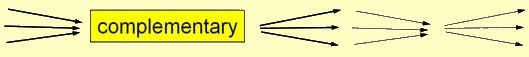

vol. 13 no. 4, December, 2008
vol. 13 no. 4, December, 2008 |
||||
This paper outlines an exploratory study concerned with what types of information behaviour users employ in order to find materials in a public library: How do users find what they find? Special focus was on identifying dimensions in the physical library that may affect possibilities for serendipity, that is, when users find materials and information not planned for (e.g., Foster and Ford 2003; Van Andel 1994). An underlying incentive in the study was a realization that in order to design physical spaces in public libraries that may attract users and prevent library bypass, it is important to know more about library users' information behaviour.
The overall aim of the study was to develop a conceptual framework including models to describe users' interaction with library interfaces. In this framework, elaborated in a section further below, the library is viewed as an integrative interface comprising all contact surfaces and mediation flows between users and available library resources. These information resources, whether human, physical or digital, can be looked upon as an integrated whole; as supplementary and supportive parts.
Users' information behaviour in public libraries has been investigated in different ways over the past decades. There have been surveys of browsing behaviour in public libraries (e.g., Goodall 1989) and studies of social activity and information behaviour in public libraries (e.g., Given and Leckie 2003; Leckie and Given 2005). There has also been increasing attention on how to improve the design and user-friendliness of physical libraries (e.g., Buschman and Leckie 2007; Lushington 2002). However, Leckie and Given (2005) point to the need for more studies on how information seeking is carried out in physical libraries. Further, there is a lack of studies of dimensions in physical libraries affecting possibilities for serendipity (hereafter: serendipity dimensions).
With this as background, the two main research questions in the study were:
Two Danish public libraries were selected as cases in the study. The Copenhagen Main Library, Hovedbiblioteket (hereafter HB), which dates from the early 1990s, has five floors, about 760,000 yearly visitors and an annual circulation of approximately 1.2 million items in 2006. As a contrast a new-built Copenhagen suburban branch library in Vanløse (VB) has one big room, around 220,000 yearly visitors and an annual circulation of approximately 300,000 items in 2006.
The empirical data were collected by two researchers during a ten month period in 2006 employing methods including:
In the two libraries, 113 users were interviewed (HB 73 and VB 40). The interviewees were strategically selected on different weekdays and hours during ten months in order to include both sexes and covering all ages (over 15 years). Users were asked for a short interview about their information behaviour when looking for materials in the library or at the lending automat (self-issue machine). Users were unobtrusively observed before being interviewed. Further, there were naturalistic observations of specific spots in the library and whole library sections. About 10% of the interviewees (HB 7 and VB 4) walked through the library with one of the researchers and gave think-aloud comments and reflections on what triggered their attention and information behaviour. Data from observations and interviews were transcribed and analysed in an iterative process of categorizing and condensing.
Focus in the study was not on generating generalizable results but on employing the methods in an exploratory way in order to identify phenomena and generate hypotheses with regard to serendipity dimensions and users' information behaviour in the physical library interface.
Results in the study are discussed in four subsections below. The first subsection presents a model of identified types and combinations of users' convergent (goal-directed) and divergent (explorative) information behaviour in the study. The next subsection outlines ten identified dimensions in physical library interfaces that may affect possibilities for serendipity. In order to put the serendipity dimensions and the library users' information behaviour into a broader and more holistic context, the third subsection introduces a conceptual framework suggesting that libraries can be viewed as integrative interfaces comprising all contact surfaces and mediation flows between users and available library resources, whether human, physical or digital. The last subsection discusses how physical and digital library interfaces provide different affordances, i.e. usage potentials, for user interaction and serendipity.
Analysis of interviews with users at the two investigated libraries showed how different users' information behaviour can be from library visit to library visit and how interests, needs and behaviour can be influenced by life circumstances; both crucial ones like unemployment, divorces and births and everyday ones like rainy weather, an upcoming holiday or lack of energy or time.
In the study, a pattern emerged where interviewed users in their own words differentiated between on the one hand goal-directed searches for materials for work tasks, studies, hobbies, etc. and on the other hand enjoyable and pleasurable browsing for materials for inspiration, experience and relaxation.
Inspired by Ford's (1999) discussion on convergent and divergent information processing in information retrieval systems, the terms convergent and divergent were used in the study to conceptualize the two main types of information behaviour; convergent goal-directed behaviour and divergent explorative behaviour, see Table 1. (The differentiation between information recovery and information discovery in Table 1 is inspired by Garfield (1986) using the terms as complementary aspects in citation indexes. In this context, Garfield (2004) interestingly talks about systematic serendipity as an essential outcome of such indexes.)
|  | |
|---|---|
| Convergent information behaviour | Divergent information behaviour |
| ⇒ 'left brain' ⇒ goal-directed, focused, rational ⇒ e.g., Boolean searches, known items ⇒ conscious, explicit information needs ⇒ problems, work tasks ⇒ 'information recovery' |
⇒ 'right brain' ⇒ explorative, impulsive, intuitive ⇒ e.g., browsing, serendipity ⇒ subconscious, implicit information needs ⇒ interest space, curiosity, pleasure ⇒ 'information discovery' |
Table 1 outlines dichotomous ideal-type aspects of convergent and divergent information behaviour. Convergent information behaviour is goal-directed, focused and rational (left brain), e.g., by applying Boolean search strings in known-item searches. This behaviour meets conscious, explicit information needs typically based on specific problems and work tasks. In contrast, divergent information behaviour is explorative, impulsive, intuitive (right brain), e.g., when browsing and experiencing serendipity. This behaviour may reflect more subconscious, implicit and muddled (Ingwersen 1992) information needs driven by pleasure, curiosity and the user's interest space (Figure 1).
The user's interest space is simplistically illustrated in Fig. 1 by an iceberg in the user's head. The top of the iceberg covers a small part conscious needs (A). Under the water is the larger part of the iceberg containing the user's subconscious interests (B-D). These latent interests, that may be small or big, can be triggered when the user moves through an information space (library, Web, city, etc.) and encounters options and opportunities afforded by this space.
In real life, the two ideal types of behaviour in Table 1 are mixed, supplement and succeed each other as alluded to in the behavioural pulse at the top of Table 1. In the study, observations and interviews revealed combinations of known-item searches and browsing, i.e., combinations of convergent and divergent information behaviour. For example, we interviewed users, who started with a convergent search in the online catalogue from their computer at home to check whether and where specific materials were available in the physical library. Subsequently, visiting the physical library, users also browsed for other materials both close to the located material and further away in other sections of the library. Digital and physical library spaces thus supplement each other.
The study showed how convergent, goal-directed behaviour can interplay with divergent, explorative behaviour and how they can alternate at the same library visit. Convergent information behaviour may thus identify central points of information that subsequently function as points of departure for more divergent behaviour. The reverse case was also found in the study, when serendipitously encountered information lead to a need for more focused and convergent search strategies. For example, an interviewee looked for bound volumes of music by the Danish composer Bent Fabricius-Bjerre. On the same shelf he also found sheet music by Bette Midler probably alphabetically misshelved by another user. The user picked up this material as well and then searched goal-directedly for CDs with Midler's music
When users move through an information space they may thus change direction and behaviour several times as their information needs and interests may develop or get triggered depending on options and affordances encountered on their way through an information space. This finding is related to research on multi-tasking information behaviour and information task switching (Spink 2004) and how information seeking may be a bit-at-a-time activity resembling berry-picking (Bates 1989).
Convergent and divergent information behaviour have parallels to shopping behaviour where buying necessary commodities for daily housekeeping can alternate with pleasant shopping and impulse-driven purchases (Underhill 1999). Other parallels to shopping behaviour are the problems that library users may experience by the sheer number of possible choices. In the study, we observed users in obvious self-negotiations trying to decide 'Will I, won't I'; walking back and forth to found materials, examining, putting back, walking away, returning, looking again, before deciding.
Figure 2 and Table 2 show different ways of finding library materials using and combining different types of convergent, goal-directed information behaviour and divergent, explorative behaviour identified in the study. The figure includes overlaps, i.e., combinations, between the different ways of finding materials in the library (see Table 2). For example, the overlap between favourite spot, substitute, supplement and systematic browsing corresponds to users who do not find the desired material in their favourite library spot and replace it with a substitute finding at the same spot and supplement this substitute finding with systematic browsing for other materials at the same favourite spot in the library. A typical example of a favourite spot in the study was shelves with detective stories visited by users every time they visited the library.
| Finding types | Explanation |
|---|---|
| Planned finding | Users find what they planned to find, known-item searches, by convergent, goal-directed behaviour. |
| Favourite spot finding | Some users goal-directedly go to the same few favourite spots every time they visit the library. |
| Substitute finding | Sometimes users do not find the planned materials and replace them with similar materials as substitutes. |
| Supplement finding | Users may supplement planned or substitute findings with findings through different types of browsing. |
| Systematic browsing | Users move systematically through library sections and scan displayed library materials. |
| Impulsive browsing | Users move more unsystematically through the library with impulse-driven behaviour including incidental encounters of materials. |
| Incidental encounters | Occasional discoveries of interesting-looking but unplanned materials on the user's way through the library. |
Research on browsing behaviour has revealed different types of browsing (e.g., Chang and Rice 1993). The two types of browsing in Table 2 should thus be seen as two ends of a continuum with intermediary types as indicated by the blurred transition between the two types in Figure 2.
| Finding types | HB | % | VB | % |
|---|---|---|---|---|
| Only convergent | 37 | 50.7 | 19 | 47.5 |
| including planned | (23) | (31.5) | (10) | (25.0) |
| including favourite | (10) | (13.7) | (4) | (10.0) |
| including substitute | (4) | (5.5) | (5) | (12.5) |
| Supplement | 29 | 39.7 | 16 | 40.0 |
| including planned | (25) | (34.2) | (13) | (32.5) |
| including favourite | (1) | (1.4) | (0) | 0.0 |
| including substitute | (3) | (4.1) | (3) | (7.5) |
| Only divergent | 7 | 9.6 | 5 | 12.5 |
| 73 | 40 |
As shown in Table 3, around 51% of the 73 interviewed users at the main library (HB) found materials by engaging in only convergent, goal-directed behaviour (including substitutes and favourite spots). Supplementary findings constituted 40% and interviewees with only divergent, explorative behaviour were 10%. Corresponding numbers for the 40 interviewees at VB were 48%, 40% and 12%. The exploratory study thus showed that about 50% of the interviewees at both libraries were goal-directed only and the other about 50% were open to unplanned discoveries. The small strategic and non-random sample means this finding is not generalizable. It would be interesting to validate in a larger and representative study. However, this finding points to the importance of libraries to meet both convergent and divergent information behaviour of users when designing library spaces.
How can the design of library spaces support users' convergent and divergent information behaviour? Libraries have developed a wide range of tools to support users' convergent information behaviour, for example, library catalogues, classification systems, shelves, etc. In this study, the focus was on what dimensions in the physical library may correspondingly support users' divergent information behaviour, or more specifically, affect affordances for serendipity when users find materials and information not planned for.
Analysis of observations, interviews and think-aloud sessions in the study suggests that the following ten dimensions in the physical library may trigger users' interest spaces and affect affordances for serendipity:
Unhampered access. Crucial for stimulating affordances for serendipity is the users' unhampered and direct access to information resources, whether human, physical or digital in the library. If information resources are hidden behind counters, in closed stacks, in endless Web lists, etc., possibilities for serendipity are restricted.
Diversity is another crucial serendipity dimension in the library: How rich is the diversity of topics, genres, resources and activities that users may encounter during a library visit? Not many other places in society contain so many topics in so relatively small an area as public libraries. The topical diversity spans the whole knowledge universe of mankind and may thus trigger the diversity of individuals' interest spaces (see Figure 1) that may lead to serendipitous findings.
Display. How the library chooses to display the rich diversity of information resources is a third crucial serendipity dimension. Library users may hurry past heavily packed shelves without discovering the potentially intriguing but concealed knowledge universes close by. Curiosity-teasing display may thus trigger users' interest spaces. Many persons interviewed in the study found unplanned materials in the library because the materials were displayed, typically by book covers on tilted shelves. As one interviewee expressed it, he noticed eye temptations and show off books on the shelves. Stack orientation and display in relation to walking directions are also important in this context.
Contrasts. Diversity and display cannot stand alone as serendipity dimensions. If our attention is to be drawn to the manifold topics and resources there must be contrasts, variation and eye-catching differentiation that make things stand out from what otherwise would just be a visual cacophony (Underhill 1999). It is thus important that the display of information resources includes differentiated contrasts in the shape of lighting, colour schemes, etc., that may trigger users' senses and create varied sense impressions. Contrasts can also be achieved by humorous details in unexpected parts of the library or by contrasting quiet zones and display zones.
Pointers. Signage, cross-references, maps and other distinct markers and pointers are important tools to trigger users' interest spaces and draw their attention to both planned and unplanned findings. For example, a father and his three-year-old boy in the study found interesting materials in the children's section due to the topical icons on the shelves.
Imperfection. Allowing imperfect 'cracks' and 'loopholes' in the controlled library interface may open up for serendipity. For example, as earlier mentioned, an interviewee looked for bound volumes of music by a Danish composer, and also found music by Bette Midler, probably mis-shelved by another user. Materials left on tables and other behavioural traces left behind by users are other examples of imperfect 'cracks' in the library interface
Cross contacts. Possibilities for serendipity may emerge through cross contacts in the shape of contact surfaces across topics, genres, materials, people and library spaces. An example of cross contacts across genres could be by simply displaying jazz biographies together with jazz CDs. Cross contacts across topics happen, for example, when the placing of shelves and other display devices (including trolleys with returned books) bring disparate topics close together. Moving just a few steps across a gangway may take the user topically far. Serendipity is thus stimulated when topical disparity is combined with physical proximity.
Multi-reachability, is a term used in the study to denote how well the physical library interface affords multiple possible routes for users to move and reach from one place to another in the physical or digital library space. For example, physical aisles or digital links can provide multiple pathways through physical and digital library interfaces. Multi-reachability affects freedom of movement and possibilities for serendipity. The more different access routes that users can choose to move along in the library space, the more different resources and topics the users may meet – and the more affordances are present in this space to trigger users' interest spaces. Interestingly, Foster and Ford (2003) refer to a study suggesting that the move to digital libraries might jeopardize serendipity by reducing the number of available paths to reach a given set of materials.
Explorability is related to multi-reachability. In the context of the present study, explorability is defined as how well the library interface invites users to movement, exploration and browsing. That is, how well the lay-out of the library spaces invites users to be curious and to explore sidetracks and byroads of the library.
Stopability counterpointing explorability, here means that the library interface invites users to stop, touch, sit and relevance-assess materials including serendipitous findings. In the physical library it could be seating possibilities close to shelves, etc. and extra spaces on shelves, tables etc. for users to put carried things down and have their hands free to grasp and examine found materials.
Summing up, public libraries should stimulate and support or at least not counteract serendipity dimensions as listed in Table 4:
| Serendipity dimension | Explanation |
|---|---|
| Unhampered access | Unhampered direct access to information resources |
| Diversity | Rich and dense variety of topics, genres, resources, activities, sections |
| Display | Curiosity-teasing mediation of information resources |
| Contrasts | Eye-catching differentiation including quiet zones and display zones |
| Pointers | Distinct signage, maps, markers, etc., may trigger users' interest spaces |
| Imperfection | Imperfect 'cracks' and 'loopholes' in library interfaces |
| Cross contacts | Contact surfaces across different topics, genres, resources, activities, sections |
| Multi-reachability | Many different access routes across library interfaces |
| Explorability | Library interface invites users to move, explore and browse |
| Stopability | Library interface invites users to stop, touch and assess found materials |
This is not an exhaustive list, as there may be additional dimensions that a more extensive investigation would have identified. The listed serendipity dimensions overlap each other. For example, a pointer such as a sign also functions as a contrast. Imperfections such as materials left on a table may also function as cross-contacts if these materials reflect mixed topics from different users.
In the library's mediation policy for how human, physical and digital information resources should be displayed and mediated to users there should be a balance between the different serendipity dimensions in order to avoid overkill, that could have the opposite effect on users so they do not open up for serendipitous findings.
In the present study, the focus was on extrinsic serendipity dimensions in the physical information space. In a more extensive study it would be interesting to also investigate intrinsic serendipity dimensions, that is, what user dimensions (such as, energy, mood, personality, interest space, intentions etc.) that may make users receptive to serendipitous findings in the interplay with information spaces (see, for example Erdelez' (1997) research on information encountering and super encounters).
In order to put the serendipity dimensions and the library users' information behaviour into a broader and more holistic context, a conceptual framework was developed in the study. In this framework the library constitutes an integrative interface comprising the totality of all contact surfaces, access points and mediation flows between users and available library resources, whether human, physical or digital.
The term interface is normally used for the means by which users interact with computers. However, in recent years, physical spaces as a user interface has emerged as a research area in computer science on pervasive computing and augmented reality (e.g., Ishii and Ullmer 1997; Wellner et al. 2003) concerned with how physical spaces can be augmented with ubiquitous digital devices and functionalities.
The adjective integrative refers to the various human, physical and digital parts of the library interface being looked upon as an integrated whole; as supplementary and supportive parts for one another. For example, face-to-face interactions between users and librarians are important components in the library interface. A library Web page with user-to-user reading suggestions and the corresponding shelf in the physical library created to display the same books can be perceived as parts of the same integrative interface. This approach opens up for discussing usability issues also in the physical interface, and not only in digital interfaces.
Human library resources comprise staff, users, invited lecturers and other human players in the library. Physical library resources comprise physical materials (books, journals, CDs, etc.) as well as physical display devices (shelves, tables, etc.). Digital library resources comprise digital materials (by screen, download) and digital display devices (online catalogue, databases, Web site, etc.).
Figure 3 shows a library user who interacts with the integrative interface of a library in the shape of all access points to the human, physical and digital resources integrated in the library. Between the resources are mediation flows facilitated by the integrative interface as outlined in Table 5.
| Mediation flow | Explanation and examples |
|---|---|
| human to human | Staff or user points to or communicates with another person (e.g., librarian, shelver, knowledgeable user) |
| human to physical | Staff or user points to physical display or material (e.g., map, shelf, book, CD) |
| human to digital | Staff or user points to digital display or material (e.g., database, web site, PDF file) |
| physical to human | Physical display or material points to human resource (e.g., poster 'Book a librarian for personal guidance') |
| physical to physical | Physical display or material points to other physical display or material (e.g., map with library floors; shelf sign; shelf with book covers) |
| physical to digital | Physical display or material points to digital display or material (e.g., poster refers to web page) |
| digital to human | Digital display or material points to human resource (e.g., web page with email links to user group) |
| digital to physical | Digital display or material points to physical display or material (e.g., web page with map of physical library; catalogue records with shelf class marks) |
| digital to digital | Digital display or material points to other digital display or material (e.g., links between web pages) |
The mediation flows in Figure 3 and Table 5 can be combined into longer chains and loops. The crucial point is how users may recognize a red line in the library design and lay-out across the different library spaces and how these mediation flows are interconnected and supplement each other.
An interesting finding in the study is the subtlety and diversity of user-to-user mediation flows in the library interface ('human to human' in Figure 3 and Table 5). This is consisent with the evolving Library 2.0 approach about user-created information sharing in digital and physical library spaces (e.g., Casey and Savastinuk 2006; Farkas 2007). For example, observed users in the study looked through shelves and trolleys holding newly returned materials or materials awaiting re-shelving after use. Similarly, materials left on tables were examined by other users. In this indirect user-to-user mediation and social navigation (Dieberger et al. 2000), users thus explore and exploit other users' behavioural traces that may lead to serendipitous findings. Another example was the Copenhagen Main Library having shelves with user-to-user-recommended fiction books (suggestions submitted to the library home page). The same library also provided flags with smileys and exclamations (Shock, Yawn, Sob, etc.) for users to attach to books they like or dislike.
As earlier noted, a crucial serendipity dimension deals with users' unhampered and direct access to human, physical and digital library resources. An important difference between physical and digital spaces in the library interface is that only in physical library spaces is it possible for users to have direct, face-to-face access to human information resources (staff and other users) and direct, tangible access to physical resources. This is an important strength of physical library spaces compared with digital library spaces where all resources are digitally mediated.
Physical and digital library spaces may supplement each other, as noted earlier; for example, when users employ convergent information behaviour in a digital part of the library interface, for instance, as earlier noted, when locating a book in the online catalogue and then supplement it with divergent browsing behaviour in a physical part of the library interface.
Direct access in physical library spaces is related to physical tangibility, or the graspability (see Ishii and Ullmer 1997) of information materials. In the study, we could see how users' physicality, senses and mobility affect users' information behaviour when seeking, finding and relevance-assessing materials in the library. Interviewed users explained that it meant much to be able to touch and hold the materials. For example, an interviewee in his twenties stated that he never searched for fiction in the online catalogue but 'walked around and fingered' at the shelves.
Physical and digital information spaces may thus provide different affordances (Norman 1999; Sadler and Given 2007) that users may perceive and use for interaction. The term affordances covers usage potentials that the interface (see Figure 3) of the information space affords (i.e., provides, offers) to users for interaction, usage and experience. Affordances may be intended or unintended by designers of the information spaces. Thus there may be a discrepancy between users' perceived affordances and designers' intended affordances (Sadler and Given 2007). Users may even perceive affordances not intended by designers. For example, an observed adult user in the study hid Harry Potter books in a library section with books on European Union legislation. Here the user obviously thought that no other users would discover the hidden books.
In this study, the focus was on affordances for serendipity in physical parts of the library interface. It would also be interesting to investigate affordances for serendipity in digital library spaces and see if all the ten identified serendipity dimensions (as hypothesized) would be present also in digital library spaces or whether physical and digital spaces may afford some mutually exclusive serendipity dimensions.
Observations and interviews in the study resulted in a model of different ways of finding library materials using and combining different types of convergent (goal-directed) information behaviour and divergent (explorative) behaviour. The investigated information behaviour was composite and situational with changes in users' behaviour between visits and during visits as the users' interest spaces get triggered in the library. Divergent information behaviour with browsing and serendipitous findings plays an important role in the physical library as indicated in the study.
Ten different serendipity dimensions in the physical library that may affect serendipity were identified in the study: unhampered access, diversity, display, contrasts, pointers, imperfection, cross contacts, multi-reachability, explorability and stopability. In order to put the serendipity dimensions and library users' information behaviour into a broader and more holistic context, the paper introduced a conceptual framework suggesting that libraries can be viewed as integrative interfaces comprising all contact surfaces and mediation flows between users and library resources. These information resources, whether human, physical or digital, can be looked upon as an integrated whole; as supplementary and supportive parts for one another. Furthermore, the integrative library interface can be designed to invite users with different interest spaces to interact with the diversity of human, physical and digital information resources available in the library.
One key realization in the study is that we are physical beings who like to interact with physical materials and other physical beings in physical spaces; physical library interfaces should thus be better designed with intended affordances to facilitate this interaction. Only in the physical library is it possible for users to have direct, face-to-face access to human information resources and direct, tangible access to physical resources. This is an important difference between physical and digital library spaces. The physical library should thus be seen as an indispensable part of the whole integrative library interface.
Mediation (or affordance) policies of libraries should include how human, physical and digital information resources should be mediated, displyed and supplement each other in the library's integrative interface. If integrated into these policies, the presented typology of convergent and divergent information behaviour and identified serendipity dimensions could serve as means to design the library interface to afford and facilitate both convergent and divergent information behaviour, supporting users to explore, exploit and expand affordances embedded in the library's integrative interface.
The study was supported by funding from the Danish Ministry of Culture, KuM no. TAKT 2005-059 and 2006-094.
| Find other papers on this subject | ||
|
|
© the
authors, 2008.
Last updated: 18 October, 2007 |
|